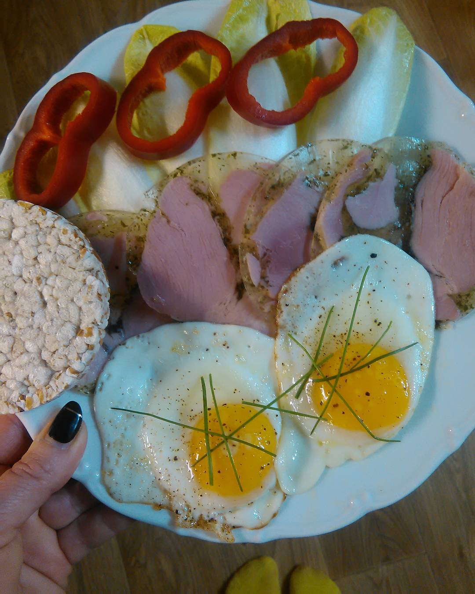

Šunka v aspiku podľa @danihelovamarcela — Normy Jedál
Vajíčka a šunka v aspiku, vraj vodníková pochúťka :-D #vecera #dnesveceriam #dnesvecerim #zdravejedlo #fitjedlo #fitjedzenie #dobrejedlo #mojejedlo #volskeoko #sunkavaspiku #zelenina #dnesjem #dnes_zjem #vkuchyni